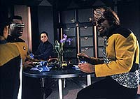
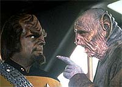
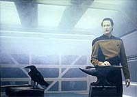
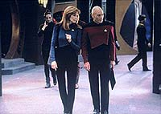
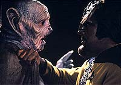

|
MANCHETE
DO EPISDIO
Data e
Worf procuram o pai, mas o
Klingon entra num 'mato sem cachorro'
Episdio
anterior | Prximo
episdio
Sinopse:
Data Estelar: 46578.4.
 A
Enterprise est atracada estao espacial Deep Space Nine,
acompanhando os reparos de instalaes Bajorianas danificadas
durante a ocupao Cardassiana. Worf, durante uma refeio com
Geordi na estao, observado discretamente por um misterioso
aliengena. Depois que Geordi parte, o aliengena, um Iridiano
chamado Jaglom Shrek, se aproxima de Worf. Ele afirma que o pai do
Klingon, Mogh, no morreu em Khitomer h 25 anos, como todos
imaginavam. Shrek diz ao descrente Worf que Mogh foi levado pelos
Romulanos para um campo de prisioneiros distante aps o massacre.
Por um preo, diz Shrek, ele ir revelar o local. Furioso, Worf
ainda se recusa a acreditar nele, dizendo que um Klingon preferiria
morrer com honra a viver como um prisioneiro.
Enquanto isso, na engenharia da Enterprise, o doutor Julian Bashir,
de DS9, Data e Geordi examinam um cilindro eletricamente carregado
recentemente recuperado no quadrante Gama. Conforme esto
trabalhando, Bashir expressa uma fascinao incontida pelas operaes
do corpo andride de Data. As conexes de energia finais so
feitas cmara de diltio, e Geordi tenta ligar o aparelho.
Subitamente, o cilindro libera um tentculo de energia que atira
Data ao cho. Ele ento se levanta, vendo-se em uma estranha e
surreal verso de um dos corredores da Enterprise. Seguindo um som
de batidas metlicas, Data entra em outro corredor para ver um
ferreiro. A face de um jovem dr. Noonien Soong, o criador de Data
--o mais perto que ele chega de ter um pai.
 Data
busca o aconselhamento de Picard sobre sua viso, explicando
algumas das interpretaes que ele pde derivar, baseadas em
outras culturas. Picard encoraja Data a explorar o que a imagem
representa para ele pessoalmente. Data ento retorna a seus
aposentos e faz uma pintura do que ele viu durante a experincia.
Enquanto isso, Worf chega ao setor Carraya. Aterrissando no planeta,
onde o suposto campo de prisioneiros Romulanos estaria localizado,
ele faz a longa jornada pela floresta a fim de encontrar seu pai.
Durante o percurso, ele encontra Ba'el, uma bela mulher Klingon,
tomando banho em um lago prximo. Ela fica chocada ao descobri-lo
espiando entre os arbustos. Worf diz que est l para resgat-los,
o que a confunde, porque ela se sente em casa. Antes que ele possa
responder, eles ouvem algum se aproximando. Worf volta para a mata
cerrada, pedindo a Ba'el que no conte a ningum sobre ele. Ento
um guarda Romulano chega e a escolta para longe do lago.
Aps pintar dezenas de quadros em uma tentativa fracassada de
despertar sua viso, Data decide recriar o incidente que causou seu
desligamento inicial. Geordi e Bashir relutantemente concordam em
ajud-lo, e dessa vez Data volta a ver o dr. Soong em sua roupa de
ferreiro, forjando uma asa de pssaro, que se transforme em um pssaro
vivo aps ser afundado em um balde de gua. Desta vez, Soong fala
com Data, dizendo estar orgulhoso do andride. Segundo ele, Data
estava se tornando mais que uma mquina e uma jornada maravilhosa
estava se abrindo para ele. Aps esse "sonho" ainda mais
incomum, Data resolve se desligar periodicamente por um breve perodo
de tempo, numa tentativa de "sonhar" mais.
Worf segue a mulher Klingon e o guarda at o complexo Romulano,
onde ele v um grupo de Klingons, composto por jovens e idosos. Ele
silenciosamente puxa um deles de lado, um senhor chamado L'Kor. O
Klingon diz a Worf que seu pai, Mogh, no estava l, tendo morrido
em Khitomer. Furioso por ver seus camaradas presos, Worf se oferece
para ajudar a libertar os 73 Klingons que esto l. L'Kor
lamentavelmente diz a Worf que ele no deveria ter vindo.
Subitamente, trs outros Klingons vem Worf. Conforme dois deles o
agarram e o derrubam, L'Kor revela que ningum vai deixar o campo,
nem mesmo Worf.
Continua...
Comentrios:
A primeira parte
de "Birthright" interessante, ainda que
fundamentalmente desencontrada. Os efeitos malficos desses
problemas de concepo do episdio so mais pronunciados na
segunda parte, mas a raiz estrutural j se observa de cara.
O episdio abre com uma premissa comum: dois personagens
principais, Data e Worf, partem, independentemente, em busca de seu
"pai", mas acabam fracassando na busca. Em vez disso,
descobrem algo sobre si mesmos que totalmente novo e
surpreendente. O arco de Data j fechado na primeira parte; o de
Worf s se resolve na continuao.
No fosse mais nada, s isso j apresenta um problema srio na
estrutura dramtica do episdio. Dois enredos paralelos andando em
ritmos diferentes e destruindo a eventual simetria entre os
personagens que os roteiristas inicialmente pareciam querer
introduzir.
 O
resultado final que a busca de Data pelo significado de suas
"vises", por mais concluda que estivesse ao final de "Birthright,
Part I", ainda apresenta uma sensao de inacabada (isso
pelo fato de, mesmo inconscientemente, a audincia estar conduzindo
as histrias de Worf e de Data ao mesmo tempo em suas cabeas).
Esse efeito mina totalmente o aspecto mais interessante do episdio
--a capacidade do andride de "sonhar".
No que seja o caso de jogar toda a sequncia no lixo: muito ao
contrrio, se h algo que sustenta a primeira parte do episdio,
isso o arco de Data. Tanto do ponto de vista conceitual (pode um
andride sonhar?), como do ponto de vista dramtico (a jornada de
um personagem rumo ao auto-conhecimento), trata-se do ponto alto do
segmento. Isso sem falar no melhor: a execuo.
Os sonhos de Data so soberbamente retratados com o uso de um ngulo
de cmera mais baixo e uma conduo fugidia --uma grande jogada
do diretor veterano Winrich Kolbe. Alm disso, as imagens
difundidas no sonho (o ferreiro, a asa que vira um pssaro e que
voa para todos os lados, sem limitaes) so bastante
representativas do potencial que se abre para o andride: com o
desenvolvimento de sua "imaginao", Data agora est
livre, assim como o pssaro, para voar para onde quiser. Seu
criador, o dr. Noonien Soong, tal como um ferreiro, partiu de um
material inerte e inorgnico e produziu uma forma de vida singular
e capaz de alcanar vos cada vez maiores. As imagens ecoam de
forma intensa toda a evoluo de Data e servem muito bem idia
geral do episdio, no que diz respeito ao andride.
Ainda se nada disso fosse interessante, s aquele vo de cmera
panormico para fora da Enterprise e de volta, como se Data fosse
um pssaro, j valeria o episdio. Talvez a tomada de efeitos
visuais mais bonita j feita da Enterprise-D. E a msica, de Jay
Chattaway, tambm de tirar o flego. Se eu tivesse uma viso
daquelas toda noite, tambm estaria ansioso para repetir o fenmeno
(como nosso amigo positrnico).
 A
presena de Julian Bashir nos experimentos de Data (e dos cenrios
de Deep Space Nine no episdio como um todo) trazem um toque
especial situao. O crossover feito entre as sries fica meio
perdido pela falta de um enredo que o justifique, mas ainda assim
um interessante elemento que une mais fortemente o universo de
Jornada como um todo.
Agora, s ms notcias: o trabalho de Worf no episdio. A
premissa at que comea interessante --um aliengena diz que o
pai de Worf no morreu, mas foi capturado pelos Romulanos e est
atualmente em um campo de prisioneiros. O Klingon parte
imediatamente procura de seu pai.
Antes de mais nada, uma nota interessante: Worf roubou aquela nave
auxiliar? Porque pedir autorizao para o capito Picard (ao
menos em tela) ele no pediu.
O grande problema com a "saga" de Worf que ela
arrastada at dizer chega. Enquanto Data segue em sua busca dinmica
pela explicao de seus sonhos, com a estratgia das pinturas e a
recriao do experimento original, Worf s amargura o dilema de
acreditar ou no no aliengena e partir em busca de seu pai. Em
tese, os personagens deveriam se ajudar na hora de resolver seus
respectivos dilemas (como sugere o dilogo existente entre Worf e
Data durante o episdio), mas nada disso acaba transparecendo de
forma efetiva (mais um problema no suposto paralelismo dos enredos).
 Para
completar a catstrofe, o episdio termina numa espcie de anticlmax.
O pai de Worf est de fato morto, como sempre pensamos. A jornada
dele at aquele lugar foi intil e em vo. Por mais que os
roteiristas tentassem salvar a tenso do episdio estabelecendo
que Worf ser mantido cativo por seus colegas Klingons, inegvel
que uma histria est terminando (a busca de Worf por seu pai) e
outra est comeando (a busca de Worf por um meio de sair dali).
At por isso o episdio estranho, e sua concluso j fica,
desde j, prejudicada.
No fim das contas, "Birthright" um episdio que
no justifica de nenhum modo o fato de ser duplo. Por mais que a
segunda parte possa ser interessante (mas no fique muito
entusiasmado, porque ela no ), ainda assim no h sentido em
criar uma histria em dois episdios que rompe tanto com o senso
de continuao entre eles. O nico motivo pelo qual o episdio
da semana que vem um "Part II" porque os produtores
precisavam de um "Da ltima vez, em Jornada nas Estrelas: A
Nova Gerao..." para explicar o que Worf estava fazendo
naquele mundo aliengena com um monte de Klingons e Romulanos...
Citaes:
Bashir - "Does your hair
grow?"
("O seu cabelo cresce?")
Data - "I can control the rate of my filament replenishment.
However, I have not yet had a reason to modify the length of my
hair. Why do you ask?"
("Eu posso controlar a taxa de reposio de meus filamentos.
Entretanto, ainda no tive razo para modificar o comprimento do
meu cabelo. Por que pergunta?")
Bashir - "Oh, just curious."
("Oh, s estou curioso.")
Data - "Is something wrong, doctor?"
("H algo errado, doutor?")
Bashir - "Well, you're breathing!"
("Bem, voc est respirando!")
Data - "Yes. I do have a functional respiratory system.
However, its purpose is to maintain thermal control of my internal
systems. I am in fact capable of functioning for extended periods in
a vacuum."
("Sim. EU tenho um sistema respiratrio funcional. Entretanto,
seu prposito manter controle trmico de meus sistemas
internos. Eu sou de fato capaz de funcionar por extensos perodos
no vcuo.")
Bashir - "And you have a pulse!"
("E voc tem pulso!")
Data - "My circulatory system not only produces
bio-mechanical lubricants, it regulates micro-hydraulic power. ...
Most people are interested in my extraordinary abilities; how fast I
can compute, my memory capacity, how long I will live. No one has
ever asked me if my hair will grow, or noticed that I can
breathe."
("Meu sistema circulatrio no s produz lubrificantes
biomecnicos, ele regular energia microhidrulica. ... A maioria
est interessada em minhas habilidades extraordinrias; quo rpido
posso computar, minha capacidade de memria, o quanto vou viver.
Ningum nunca perguntou se meu cabelo cresce, ou notou que posso
respirar.")
Bashir - "Well, your creator went to a lot of trouble to
make you seem human. I find that fascinating."
("Bem, seu criador teve muito trabalho para fazer voc parecer
humano. Eu acho isso fascinante.")
Bashir - "Data, perhaps we are going about this the wrong
way."
("Data, talvez estejamos olhando isso do jeito errado.")
Data - "How so?"
("Como?")
Bashir - "Well, maybe you had a dream or
hallucination."
("Bem, talvez voc tenha tido um sonho ou alucinao.")
Data - "I am not capable of either of those functions."
("No sou capaz de nenhuma dessas funes.")
Data - "I plan to shut down my cognitive functions for a
brief period each day. I hope to generate new internal
visions."
("Pretendo desligar minhas funes cognitivas por um breve
perodo a cada dia. Espero gerar novas vises internas.")
Bashir - "It sounds to me like you are talking about
dreaming."
("Parece que voc est falando de sonhar.")
Data - "An accurate analogy."
("Uma analogia acurada.")
Trivia:
 Este o primeiro e nico episdio da Nova Gerao em
que h um crossover com a (na poca) recm-lanada Deep Space
Nine, e foi feito de uma forma extremamente econmica. A nica
cena em que a Enterprise-D aparece atracada na estao a mesma
do episdio-piloto "Emissary",
e repetida diversas vezes durante o episdio.
Este o primeiro e nico episdio da Nova Gerao em
que h um crossover com a (na poca) recm-lanada Deep Space
Nine, e foi feito de uma forma extremamente econmica. A nica
cena em que a Enterprise-D aparece atracada na estao a mesma
do episdio-piloto "Emissary",
e repetida diversas vezes durante o episdio.
O
nico personagem de DS9 a dar as caras e at visitar a
Enterprise neste episdio o dr. Julian Bashir. O'Brien citado
por La Forge. Sisko, Kira, Dax, Odo e Jake no so lembrados, porm
os fs de Morn podem se preparar, pois ele faz uma apario no
Promenade e, claro, no fala uma palavra sequer!
James Cromwell interpreta aqui o Yridiano Jaglom Shrek. Cromwell
mais conhecido como o Zefram Cochrane do oitavo filme de Jornada
para cinema, "Primeiro Contato", e j havia
participado da Nova Gerao como Nayrok, no episdio "The
Hunted", da terceira temporada. Durante as filmagens de "Birthright"
James Cromwell quebrou a perna, e diversas cenas em que seu
personagem apareceria no chegaram a ser filmadas.
Ficha
tcnica:
Escrito por Brannon Braga
Direo de Winrich Kolbe
Exibido em 22/02/1993
Produo: 142
Elenco:
Patrick Stewart como
Jean-Luc Picard
Jonathan Frakes como William Thomas Riker
Brent Spiner como Data
LeVar Burton como Geordi La Forge
Michael Dorn como Worf
Gates McFadden como Beverly Crusher
Marina Sirtis como Deanna Troi
Elenco convidado:
James Cromwell
como Jaglom Shrek
Jennifer Gatti como Ba'el
Cristine Rose como Gi'ral
Siddig El Fadil como Dr. Julian Bashir
Richard Herd como L'kor
Episdio
anterior | Prximo
episdio
|